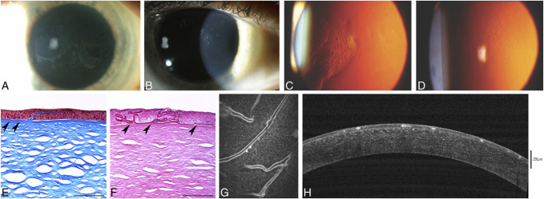

Epithelial Basement Membrane (EBMD)
Map-dot-fingerprint / CoganMost common anterior corneal dystrophy; IC3D now considers it mostly degenerative. Geographic map lines, fingerprint lines, Cogan microcysts (dots). Causes recurrent corneal erosions (RCE). Negative staining with NaFl.
Changed from your original
- Inheritance clarified: IC3D 2024 calls EBMD most likely degenerative; true AD families are rare. source

Tap to reveal